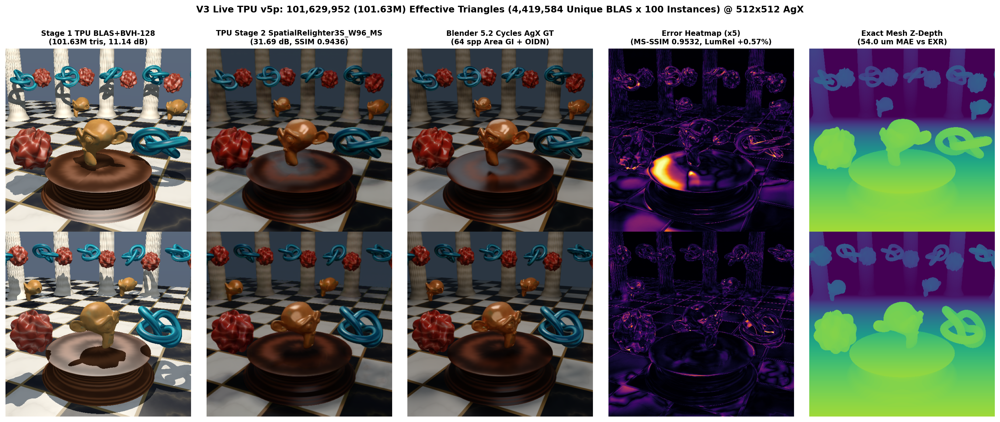

Click to zoom
101.63M Tris
Native 4K 30.86 dB
18.5 um Z-MAE
101.63M-Tri Blender 5.2 AgX Showcase vs Cycles 64-spp GT
4.42M unique BLAS × 100 instances (`w5`). Zero-shot Native 4K (`3840×2160`) reaches `+20.14 dB` over Stage 1 at `4.97 s` total S1+S2 on 1 chip.